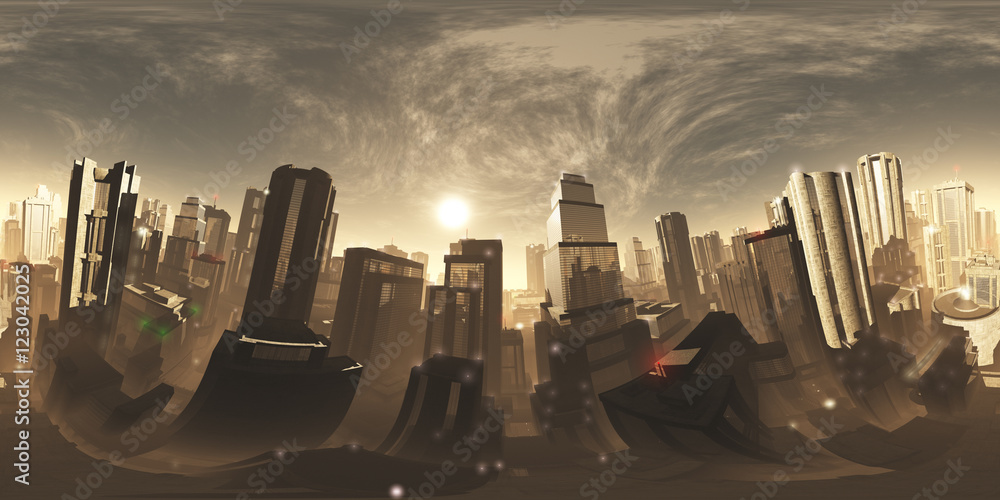
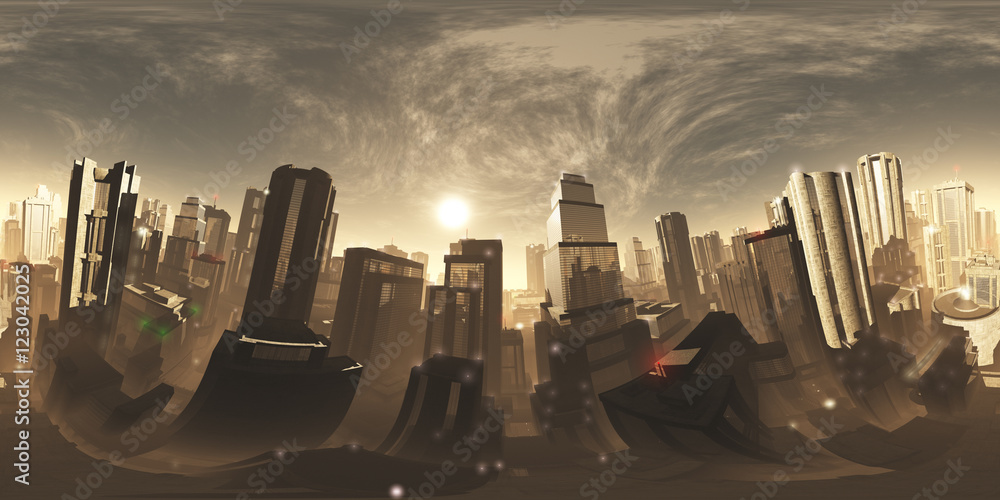

🎯 HUD CONTROLLER CENTRALIZADO
H - Alternar HUD
U - Ajustar Transparência
K - Recarregar HUD
📏 Dimensões:
+/- - Aumentar/Diminuir HUD
0 - Reset completo
📊 Dados Exibidos:
• Velocidade (KM/H)
• Altitude (Metros)
• Bateria (% com cor dinâmica)
• Coordenadas GPS
• Distância para Objetivo
• Modo de Voo
• Tempo de Missão
🎯 HUD totalmente transparente (sem fundo)
📏 Sistema centralizado para fácil manutenção
📍 Paralaxe sutil baseado no movimento do drone
🛸 Apenas linhas brancas do hud-01.svg visíveis
 
